Загрузка онлайна
Поскольку на нашем сервере стоит большая сборка модов, для того чтобы начать играть рекомендуется скачать наш лаунчер для Windows
Скачать или
Вы также можете скачать сборку и установить её самостоятельно на свой лаунчер
Загрузка онлайна
Наш сервер основан на индустриальной механике Create с реалистичной физикой воздушных кораблей из Valkyrien Skies, позволяя строить движущиеся механизмы и летательные аппараты. Дополнительно установлен voice-чат, создающий живое взаимодействие между игроками. Сбалансированная сборка ориентирована на выживание, инженерию и совместное строительство в мире
Наш кастомный лаунчер делает подключение простым
Моды подобраны так чтобы обеспечить приятный гейплей для всех
Для того чтобы изучение модов было проще и интереснее мы создали обширные квестлайны